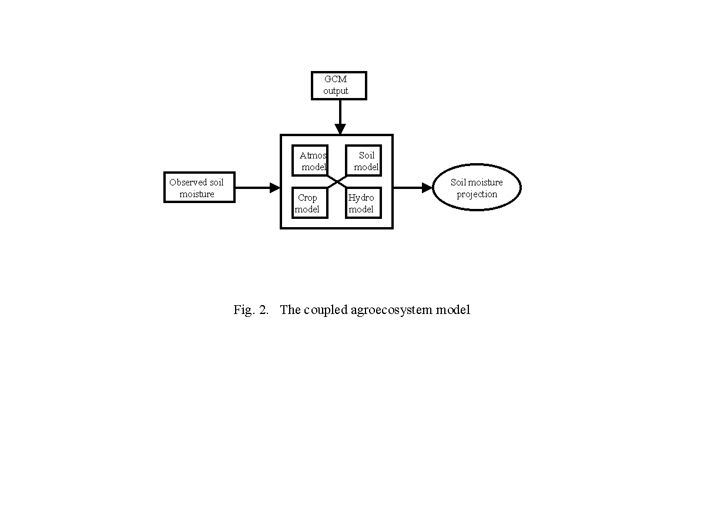
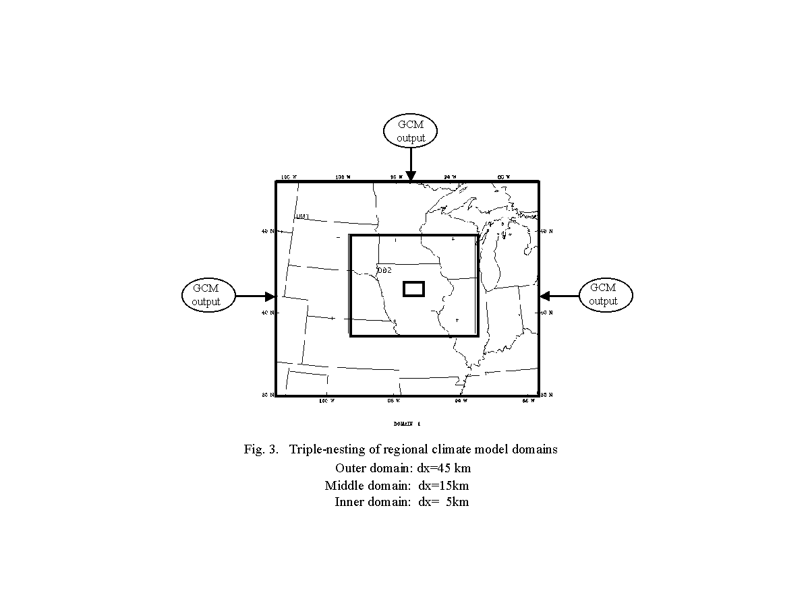
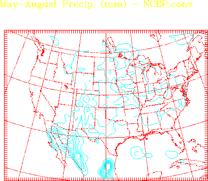
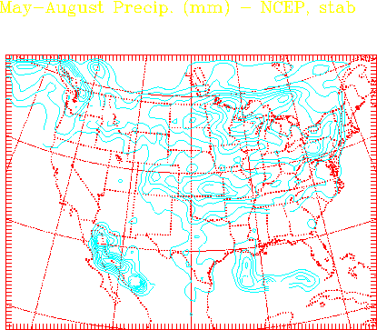
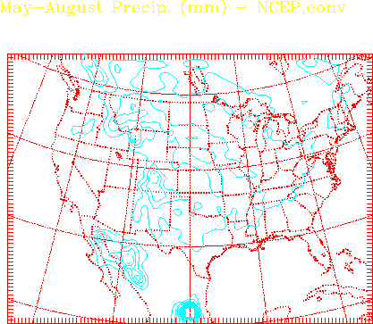
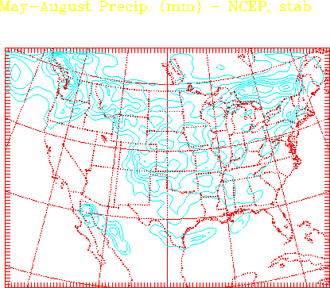

An Agroecosystem Water Management Model:
Coupling of Plant, Soil, and Climate Components
-- Growing Season Soil Moisture Forecasts - 2001
Introduction
As a test run of the Agroecosystem Water Management Model, we try to project soil water
available to crops in Iowa during growing season. The ultimate goal of this Agronomy Endowment
funded project is to develope a fully coupled modeling system that will allow crop producers
to inventory, update, and project seasonal soil water availability at field or
sub-field scales for planning strategies on cropping, seed selection,
chemical application, planting, harvest, and marketing,
and allow scientists to further their understanding of
nonlinear interactions among individual components within
a whole agroecosystem.
This integrated model will eventually couple following component modules:
Regional climate model - MM5
Crop growth and root development model
Soil and hydrological model


2001 test run
The initial and boundary conditions were provided by
the Experimental Climate Prediction Center
ECPC.
Integration stated from April 28 through August 25, 2001.



